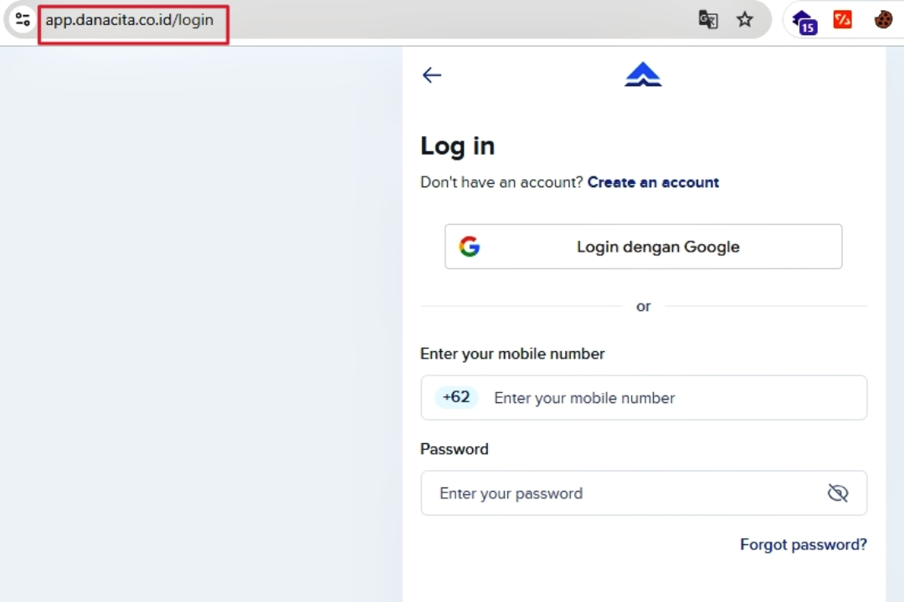
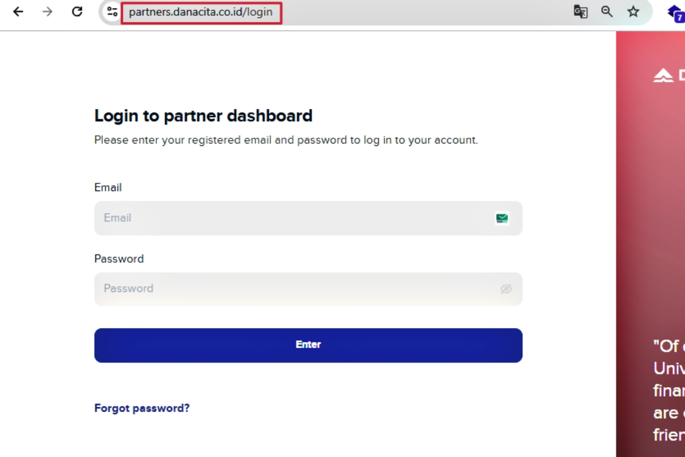
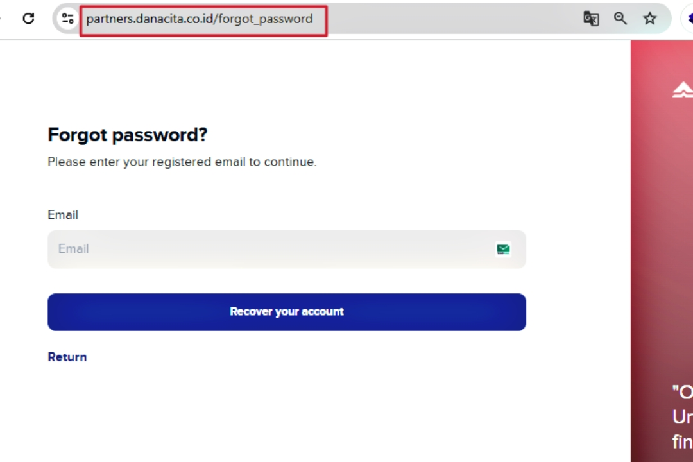
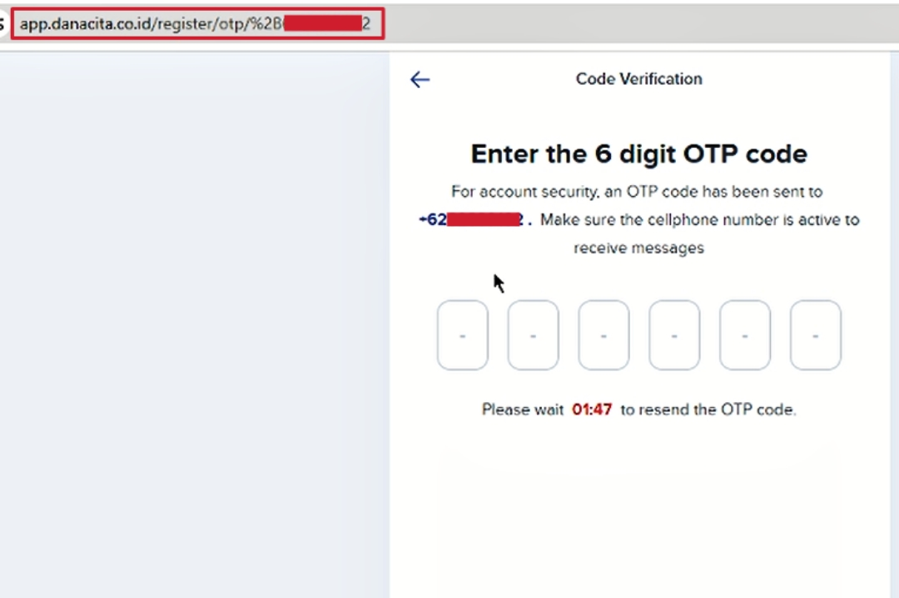
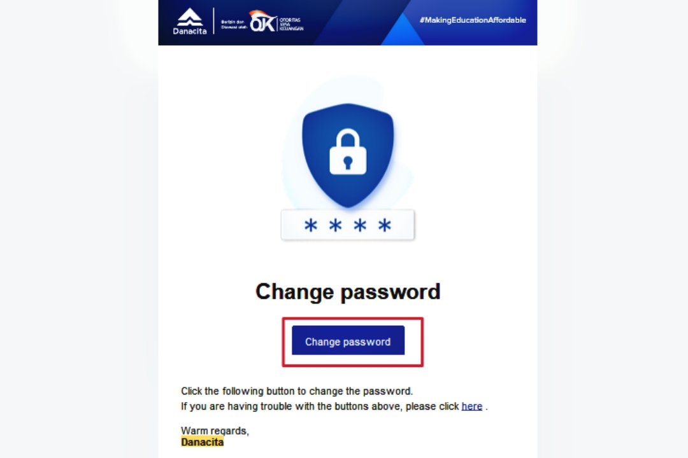
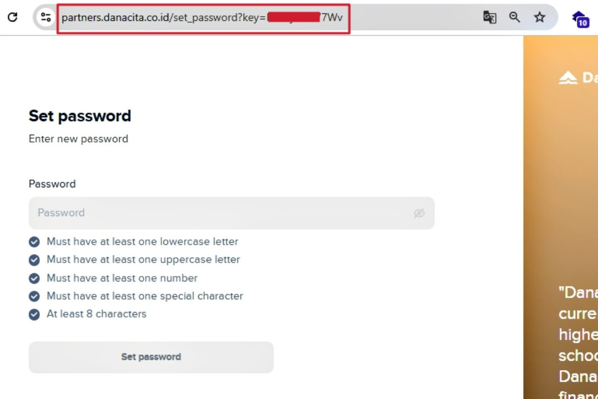
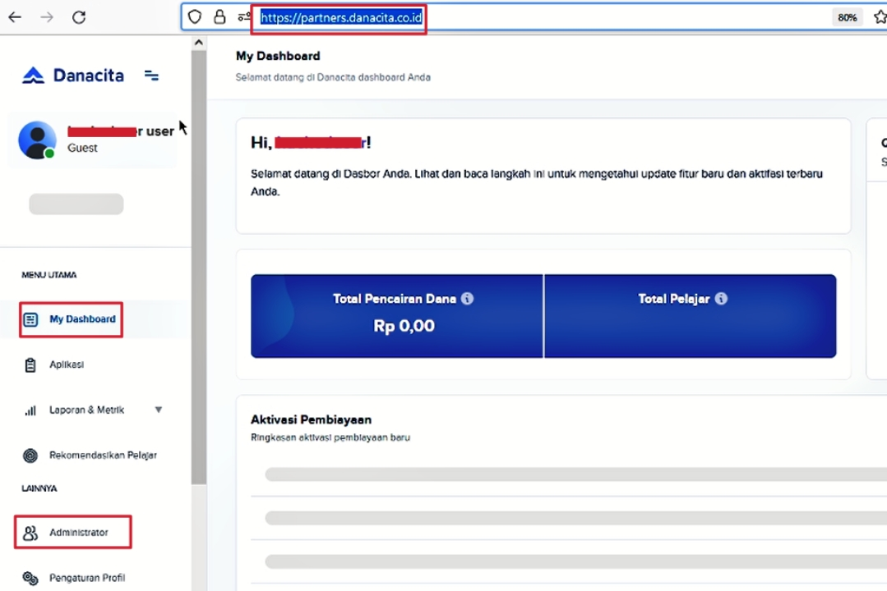

Broken Authentication
- Step Visit https://app.danacita.co.id/register and enter email, random phone no. and random password. You will be then redirected to OTP screen.
- Step Don't enter any OTP, exit that screen and directly visit https://partners.danacita.co.id/forgot_password
- Step Now, enter the email in forgot password page that you previously entered in registration page https://app.danacita.co.id/register
- Step You will receive a password reset token to change/add password for that email and to gain access into partners.danacita.co.id subdomain i.e https://partners.danacita.co.id/set_password?key=R5Z6jHJ83094
- Step You have't created account in (app) AND (partners) subdomain, but still you were able o enter into partners.danacita.co.id subdomain.
- Hey Hackers ,
- My name is Parth Narula,
and I'm excited to share one different kind of Broken Authentication bug! This bug is based on the weak validation flaw of website :)
1. Website Functionality Check (Crawling)
- • Initially, I began by routinely crawling the website danacita.co.id and subsequently identified two subdomains: app (app.danacita.co.id) and partners (partners.danacita.co.id).


1. app.danacita.co.id subdomain
- This subdomain includes both a login and a registration page located at:
• Login Page: https://app.danacita.co.id/login
- Note On the login page, the input
fields were limited to a phone no. (Indonesian no. only) and a password.
• Register Page: https://app.danacita.co.id/register
- Note On the registration page, the input fields
included an email address, phone no. (Indonesian n. only), institution, and password.

2. partners.danacita.co.id subdomain
- This subdomain was only having login page and no register page but there was option for forgot password as usual in all the websites.
• Login Page: https://partners.danacita.co.id/login
- Note In login page the input
fields were limited to an email address and a password.
• Forgot Password Page: https://partners.danacita.co.id/forgot_password
- Note In the forgot password page the only
input field available was for an email address.

2. Behavior of both Subdomains
- • Now, We will be analyzing input field behavior across login, registration, & password recovery page.
1. app.danacita.co.id subdomain
- • As mentioned earlier, the primary fields for authentication included an email address, phone no, & password.
- Important After a user enters their email, phone number (limited to Indonesian numbers only), and password, they are redirected to an OTP verification page.
In that page the website send OTP to the phone no. only and not to email then we entered previously in our registration page. You know that we wasn't able to enter other then indonesian no. and that's how we was not able to completely create and enter into account and just stuck on OTP screen. You will only get in account if you entered correct OTP, But I failed several times and wasn't able to enter into account.

• You might be wondering why the email is required if the OTP is only sent to the phone number.
I'll explain the purpose of the email shortly...
• Login Page: https://app.danacita.co.id/login
- • In login page, authentication requires only the phone no. and password that were previously
entered during registration.
- Important In the registration process,
although users are required to enter an email, phone no, & password, but the OTP is only sent to the phone no.
The email and password are not utilized during OTP verification, making the OTP the critical factor for account creation.
2. partners.danacita.co.id subdomain
- • As previously mentioned, there is no registration option/page available. Only users who already have an existing account
and can provide the correct email address and password are able to log in to this subdomain from login page.
- Important The partners subdomain does not have a registration
or account creation page like the app subdomain, so new users are unable to access it.
- I thought that maybe the email and password that I entered in register page of app may work.
I entered the email and password but not get logged in this partners subdomain. Maybe this an be the reason that our account was not fully created/verified in app subdomain
as we got stuck on OTP screen.
- • This was standard password reset page. Already existing users can request a password reset token by entering their email address into the input field.
- Important It seems that in the app subdomain, the phone
no. is the primary method for authentication, while the partners subdomain relies mainly on email.
- I thought maybe the email that was useless in app subdomain get used in this subdomain to get authenticated.
But how that's possible because there was no register page and only login page (means only authenticated users were allowed) and our account was
not fully created/verified in previous subdomain so our email not get stored in database and can't be used as already existing or authenticated user.
- Understanding Now, let me make it clear that It was not possible to somehow bypass login/register page of app sub. So, I
shifted my attention to partners sub to somehow find a flaw and get into that subdomain without fully getting registered in app sub and also not providing credentials for already existing user as I was not having that.
Cause there was use of email in this subdomain so maybe it can be somewhat possible to find a broken logic into this or previous subdomain to access this partners subdomain.
3. Discovery of Broken Logic
- • Now, Behaviors about these two subdomain would be much clear to you. This section is the core part
of this Article so If you still don't understand the working of subdomains so again read above sections.
1. app.danacita.co.id subdomain
• Register Page: https://app.danacita.co.id/register
- • I entered email, phone no. and password in this page and get into OTP screen. You know its important to enter correct OTP
to get into account and there was no use of email in this subdomain.
I think that when I entered the email, phone and password and get redirected to OTP screen then our half registration is completed. Right? So, maybe website has stored our all details (email, phone & password) or few details (email & password) in its DATABASE, when we get redirected to OTP screen.
• Login Page: https://app.danacita.co.id/login
- • There was option for phone and password to get logged in and no use of email. I was stuck till OTP screen only.
- Keep In Mind How I can test that email is stored or not in DB when our half registration is completed
(means we get on OTP screen), cause there was no option to enter email in this subdomain login page. So, I think that partners.danacita.co.id was having email option
in login page.
2. partners.danacita.co.id subdomain
• Login Page: https://partners.danacita.co.id/login
- • So, I suspected that the DB of both subdomains might be connected, so I tested if my email was stored before fully creating account and after getting redirected to OTP screen.
I tried logging in to partners with the email and password I used on the registration page of
app sub, assuming my email might have been stored even if my phone number wasn't.
This was my last hope for accessing the partners subdomain.
Still I wasn't able to access the partners subdomain with the email and password, I decided to give it one last try using the "Forgot Password" page on this subdomain.
• Forgot Password Page: https://partners.danacita.co.id/forgot_password
- • So, I entered the email here also to check whether my email is really stored in DB or not.
Boom!!! I received a password reset token on my that email and I was able to reset password and get into partners subdomain without fully creating an account on app subdomain and also by not providing credentials (email & password) of already existing user in partners subdomain.
- Important It turns out that my assumption was correct. The email was stored in
the DB when I was redirected to the OTP screen (means half registration/verification is completed), and it appears that the databases of both subdomains are connected or the same.
This allowed me to use the "Forgot Password" page on the partners subdomain to confirm that my email was indeed stored.
4. Steps To Reproduce



5. Reasons - Why this happened ?
- There were mainly three reasons for happening of this very cool vulnerability:
• The website was storing our details (email) into there DB even when our account is not fully created. It was storing email into DB when we redirected to OTP screen. But, The system didn't fully validate or clear partially entered data, leading to discrepancies between the subdomains in how user details are handled and stored.
• Databases of both the subdomains are connected. This is not a bad approach to connect DB or use same DB for multiple subdomains. But, as our email of app.danacita.co.id was stored in that DB before fully creation of account and If we ask for password reset of that email so partners.danacita.co.id check that whether this is stored or not. Due to this flaw it get stored and it think this user already exists and send us a password reset token to get into the account.
• The partners subdomain relied on email for authentication, while the app subdomain primarily used phone numbers. The incomplete registration on app still led to partial data storage that could be accessed or tested on partners.
4. Conclusion
- So mates, I hope you had learnt something new after reading this article. You can share your views in my Contact Page and If you guys also want to become a author of a article so also you can email me or fill contact form and I will post your article here with your name, Only if the topic is interesting :)